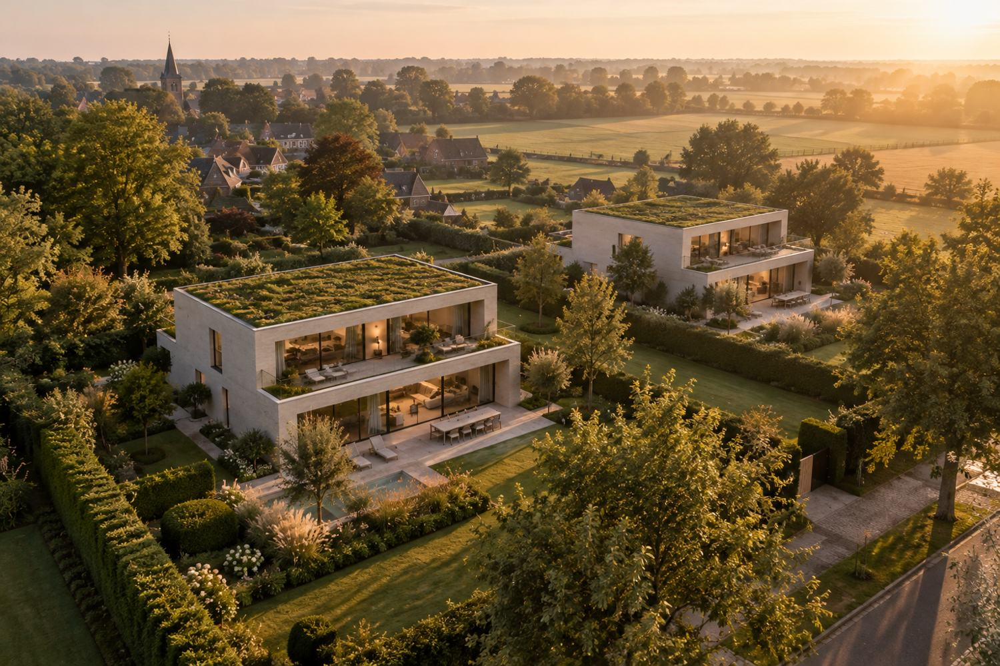
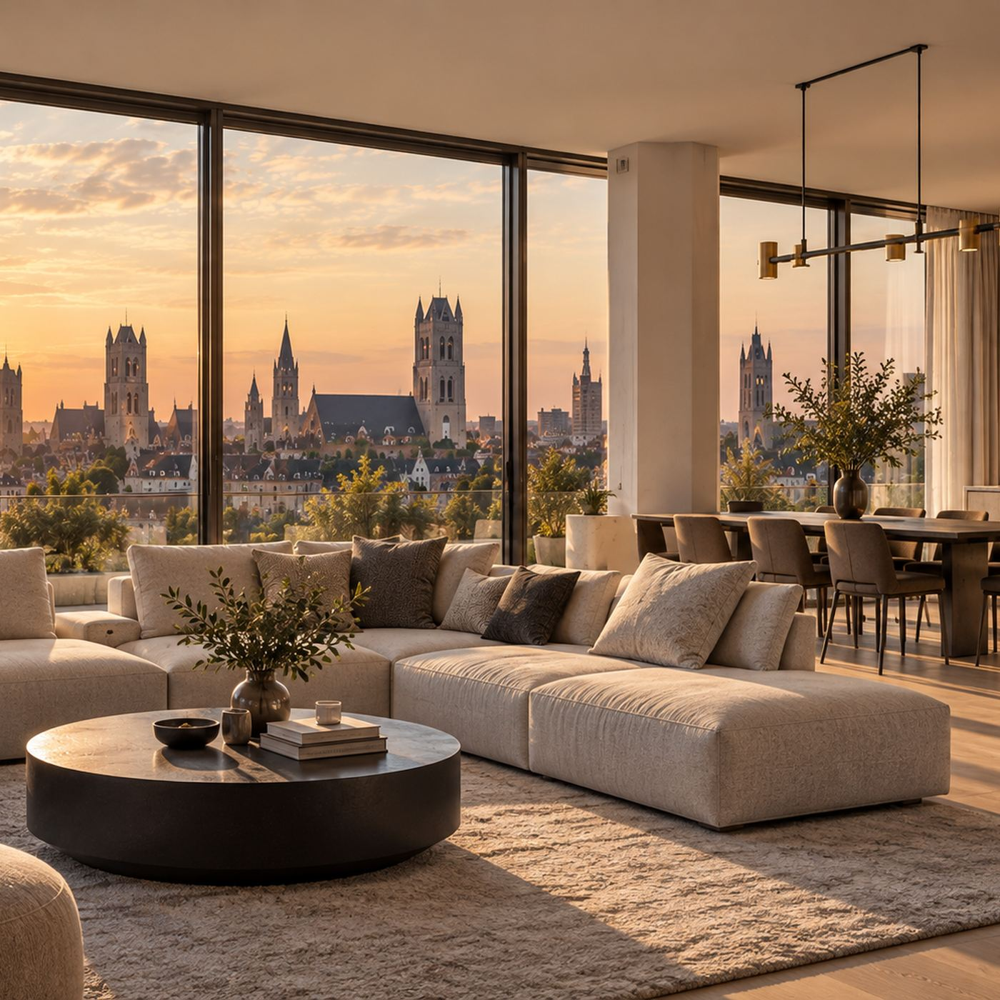
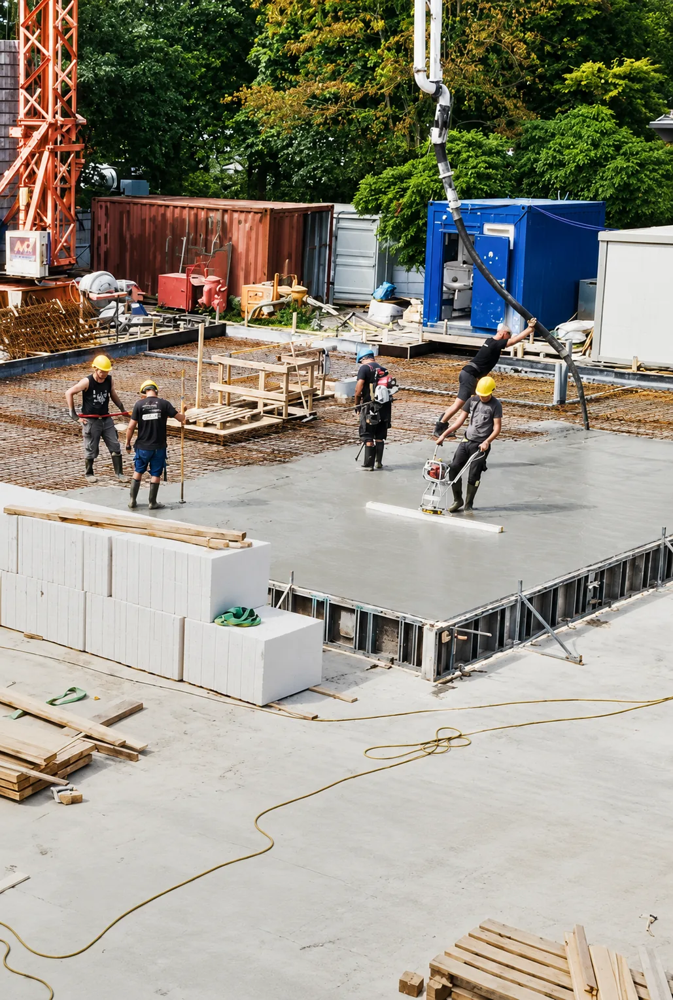
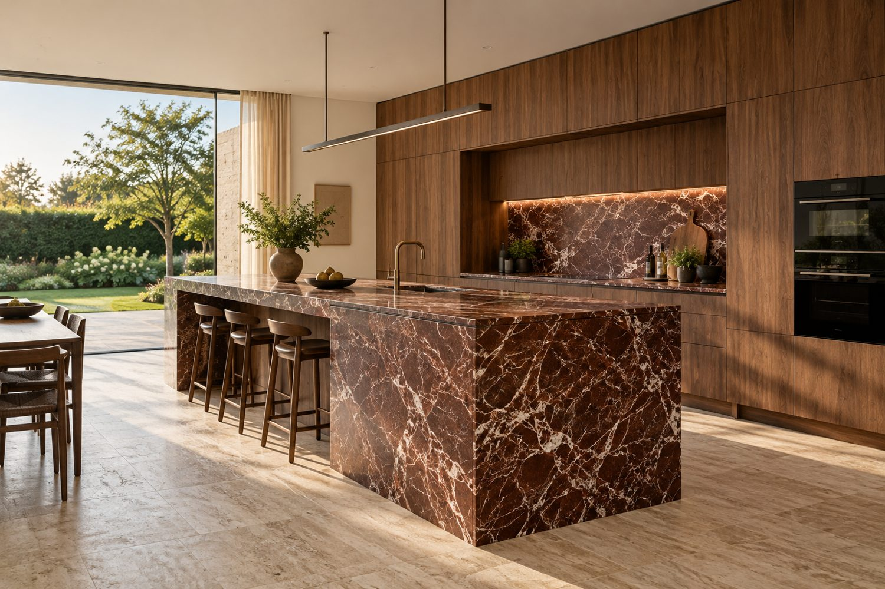
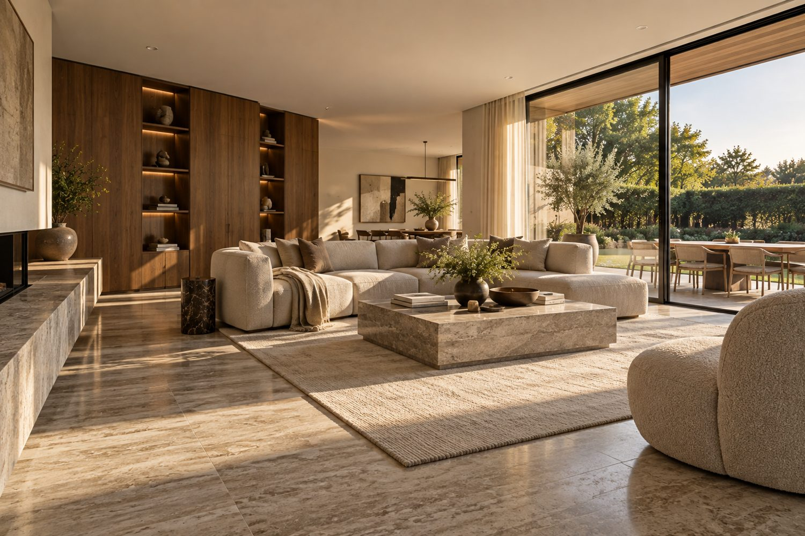
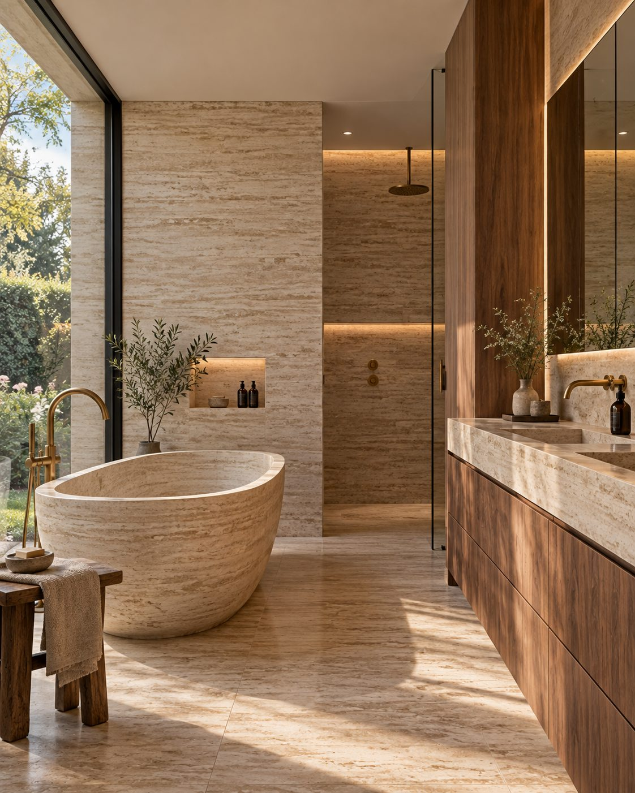
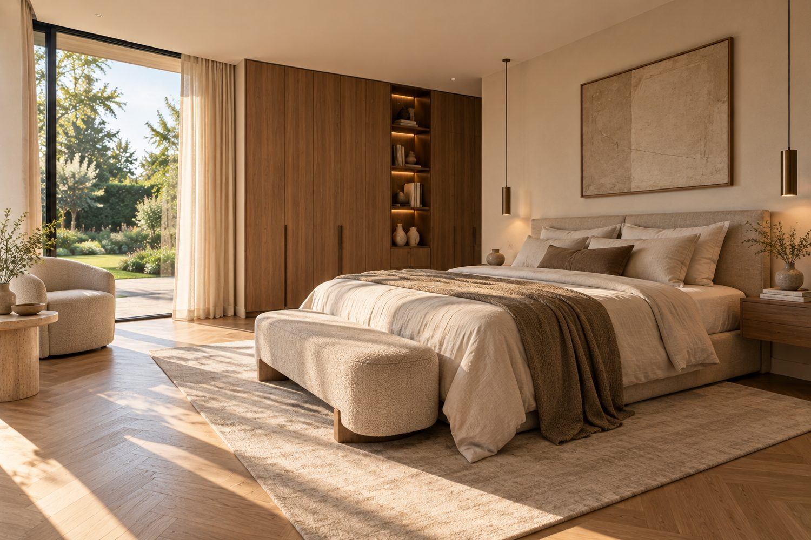
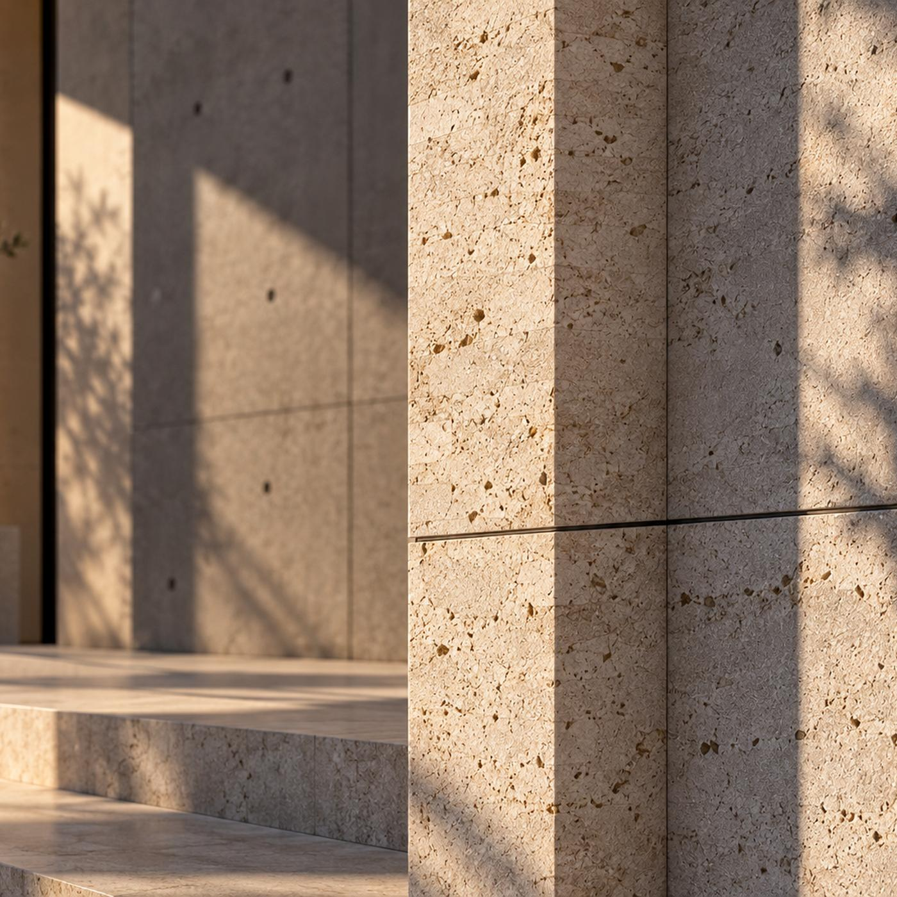
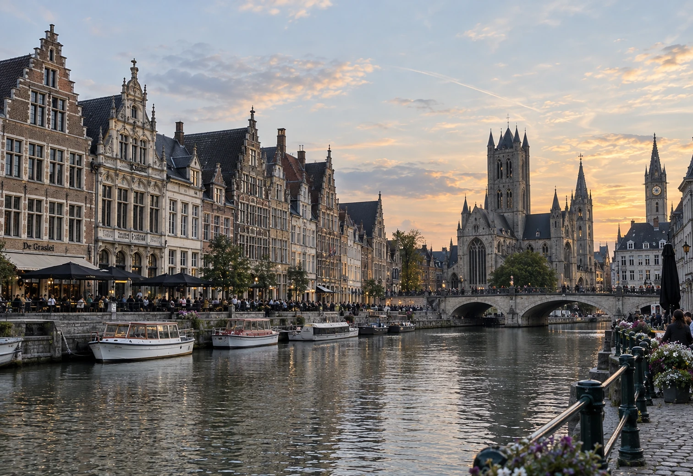

01 — Homes for a brighter tomorrow.
Habiter commence
par un lieu.
Nous développons des projets résidentiels sur des emplacements soigneusement choisis, avec une attention particulière pour l’architecture, la qualité de vie et la valeur durable.
L’immobilier.
Pour des générations.

Exceptional homes.
Lasting value.
Plus que des logements.
Des lieux de vie
d’avenir.
Nous créons des lieux où l’on aime habiter, vivre et rentrer chez soi. Avec un regard sur l’architecture, la qualité et le long terme.
Emplacements
forts
Accessibles, verts et pleins de caractère.
Une architecture
de caractère
Des conceptions intemporelles, des matériaux authentiques.
Qualité de vie
Lumière, espace et sérénité dans chaque détail.
Valeur
durable
Bâti pour traverser les générations.


Notre vision
Des lieux qui
créent de la valeur.
Nous croyons en un développement réfléchi, respectueux de son environnement et attentif aux générations de demain.
—— En savoir plus sur notre approche →Signature Finish
Des matériaux qui
durent.
Chaque logement bénéficie de la même finition soignée. Survolez ou touchez les échantillons pour les voir de près.
- 01Pierre naturelle travertin premium dans toutes les pièces de vie
- 02Des sols en bois chaleureux dans toutes les chambres
- 03Menuiserie entièrement sur mesure dans toute la maison
- 04Une finition d’exception, avec un soin remarquable du détail
- 05Un home staging haut de gamme pour une expérience clé sur porte
Travertin
Développements
Développements.
Nous partageons nos développements résidentiels avec discrétion, exclusivement avec des acquéreurs et investisseurs sélectionnés.
Private Access
Private Access
Nous partageons nos développements résidentiels avec discrétion, exclusivement avec des acquéreurs et investisseurs sélectionnés. Laissez-nous vos coordonnées ; chaque demande est examinée personnellement.
Merci.
Nous examinons votre demande et vous recontactons personnellement.
Finitions intérieures
Finitions intérieures.





En développement
Sélectifs et
convaincus.
Nos développements résidentiels sont choisis avec soin et élaborés avec la plus grande attention.
Un emplacement à potentiel ?
Parlons-en.
Nous sommes toujours intéressés par des terrains, des bâtiments et des opportunités immobilières en Belgique.
